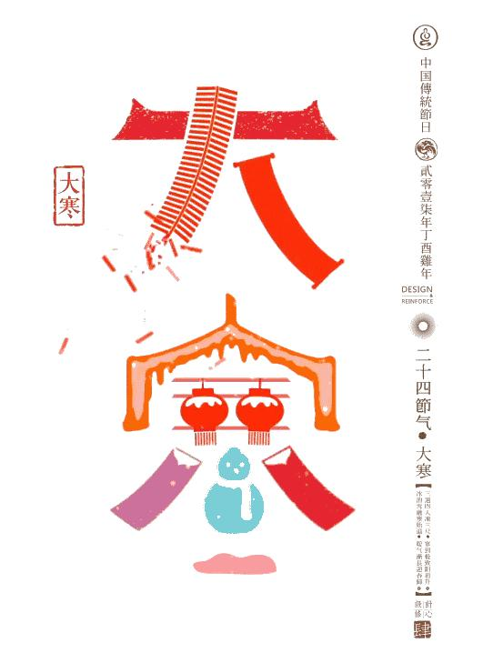
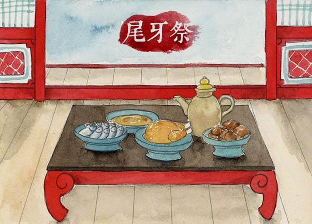
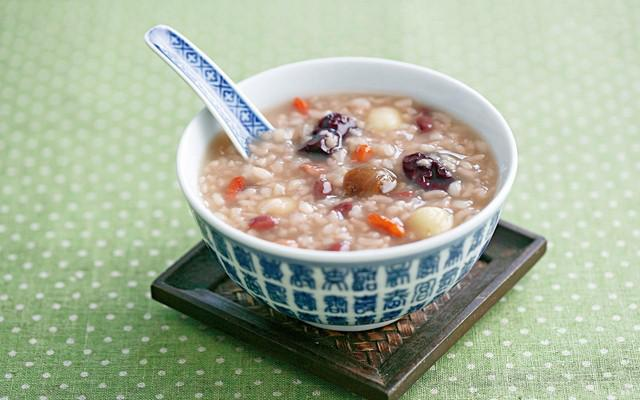
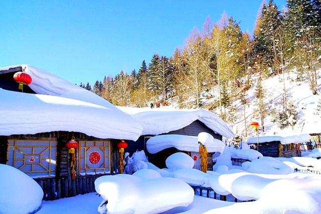

大寒是二十四节气中的最后一个，每年1月20日前后，太阳到达黄经300°时即为大寒，今年的大寒时间是1月20日（农历丁酉年腊月初四）。至此，节气轮回，下一个节气就是立春，新一轮的循环往复即将到来。
“大寒年年有，不在三九在四九”。大寒和小寒是表示寒冷程度的节气，古人认为：“大寒为中者，上形于小寒，故谓之大……寒气之逆极，故谓大寒。” (《授时通考·天时》引《三礼义宗》)此时，寒潮南下频繁，是大部分地区一年中最冷的时期，风大、低温；北方正值“四九”天气，黄河以北积雪不化，更是一片天寒地冻的严寒景象。
根据《月令七十二候集解》记载，古时将大寒分为三候：“一候鸡乳；二候征鸟厉疾；三候水泽腹坚。”就是说，大寒节气便可以孵小鸡了；而鹰隼之类的猛禽，正处于捕食能力极强的状态，盘旋于空中到处寻找猎物，以补充能量、抵御严寒；水域中的冰一直冻到水中央，此时的冰最坚实、最厚。此外，江南一带有二十四番花信，“一候瑞香，二候兰花，三候山矾”，也被作为判断大寒的重要标志。
大寒节气里，各地因为气候条件不同，开展着不同的农事活动。北方地区的农事主要是积肥堆肥，为开春做准备，或者加强牲畜的防寒防冻。南方地区则仍在加强小麦及其他作物的田间管理。广东岭南地区有大寒联合捉田鼠的习俗，此时作物已收割完毕，平时看不到的田鼠穴显露出来，于是大寒成为集中灭鼠的重要时机。
此外，各地人们还以大寒气候的变化来预测下一年的雨水及粮食收成情况，便于及早安排农事。相关的农谚包括“大寒不寒，春分不暖”，意思是如果大寒这一天不冷，那么寒冷的天气就会向后延展，来年春分时节会十分寒冷。“大寒见三白，农民衣食足”，意思是如果大寒时节下雪很多，把蝗虫的幼虫冻死，来年的农作物就能免遭虫灾，获得丰收。此外还有“大寒不寒，人马不安”“大寒白雪定丰年”“大寒无风伏干旱”等说法。关于气候和农事的谚语还有：
小寒大寒，杀猪过年。
过了大寒，又是一年。
该冷不冷，不成年景。
大寒到顶点，日后天渐暖。
大寒猪屯湿，三月谷芽烂。
大寒牛眠湿，冷到明年三月三。
南风送大寒，正月赶狗不出门。
小寒不如大寒寒，大寒之后天渐暖。
尾牙祭 尾牙源自于拜土地公做“牙”的习俗，在中国福建沿海、台湾等地仍保留着尾牙祭的传统。所谓农历二月二为“头牙”，以后每逢初二和十六都要做“牙”，到了农历十二月十六日正好是尾牙。尾牙与头牙一样，吃春饼（南方叫润饼），这一天生意人要设宴，白斩鸡为宴席上不可缺少的一道菜。据说鸡头朝谁，就表示老板明年要解雇谁。因此现在有些老板一般将鸡头朝向自己，以使员工们能放心地享用佳肴，回家后也能过个安稳年。
腊八粥 至今，每逢农历腊月初八，民间仍保留着吃腊八粥的风俗（有的地方是吃腊八饭）。进入腊月，天气虽然寒冷，但春天已近，不会像大雪到冬至期间那样酷寒。人们开始忙着除旧布新，置办年货，其间还有一个对北方人来说非常重要的日子，即农历腊月初八。腊八粥是这一天人们不可或缺的一道主食，用多种食材熬制而成，包括五谷杂粮和花生、栗子、红枣、莲子等。吃腊八粥的食俗，有说是古代蜡祭的遗存（《礼记·郊特牲》），含祝祷之意，也有驱寒祈福、庆祝丰收的用意。
“腊八节”也是宗教节日。传说佛教的创始者释迦牟尼在腊月初八悟道成佛，因此佛教寺院每年都要予以纪念。《东京梦华录》记：“诸大寺作浴佛会，并送七宝五味粥与门徒，谓之腊八粥。都人是日各家亦以果子杂料煮粥而食也。又称佛粥。”有些信众认为，腊八供养佛陀的粥吉祥，于是年复一年，寺院做腊八粥的传统便广泛传播到民间。
大寒节气正值冬与春交替，饮食也需顺应季节的变化。与冬至以来的温补不同，大寒进补的食物量宜逐渐减少，具有升散性质的食物可适当添加，以适应春天万物的升发。例如，广东佛山民间有大寒时节用瓦锅蒸煮糯米饭的习俗，安徽安庆有大寒炸春卷的做法，南京则有大寒炖鸡喝鸡汤的食俗。
古人讲究“春发、夏长、秋收、冬藏”的养生原则，认为这样可以保持“春安、夏泰、秋吉、冬祥”。冬三月是生机潜伏、万物蛰藏的时令，大寒的养生，更应着眼于“藏”。此时，人体的阴阳消长、新陈代谢也处于相对缓慢的时期，因此，起居上宜早睡晚起，室外活动不宜过早，避免急躁发怒、过度操劳，这样才有利于安度寒冬。